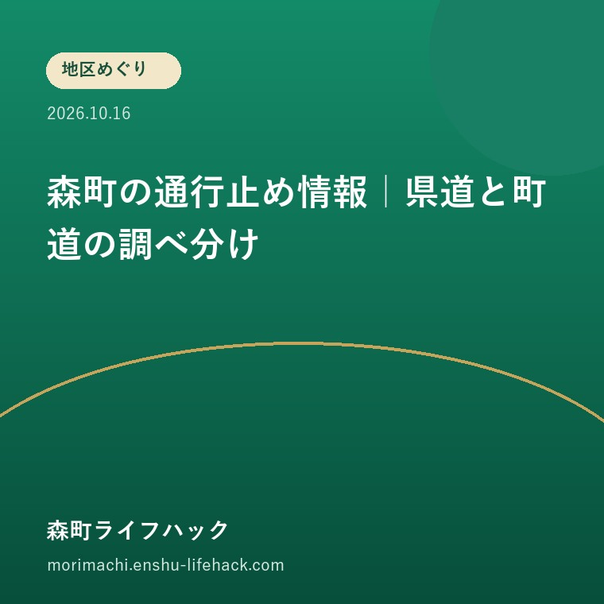

地区めぐり
森町の通行止め情報｜県道と町道の調べ分け

Q. 森町の山間地区へ行く前、県の道路地図だけ見れば足りる？
A. 県の地図だけでは足りません。静岡県道路通行規制情報提供システムは主に県道以上を扱い、森町が管理する道路は対象外です。実家までの経路を県道と町道などに分け、通行予定日の規制と対象外区間の確認先を控えてから出発します。
出発前に見るのは、家までの経路全部
森町の道路を保つ仕事は、山あいの集落へ通う人の暮らしを支えています。点検や工事を担う方と、規制中に遠回りする住民の負担があります。帰省する家族も、その道を使わせてもらう側です。出発前の確認を、現地へ着いてからの聞き込みで済ませない段取りを考えたいと思います。
秋に実家の換気や庭の手入れへ行くとき、ナビの到着予想だけで予定を組むと、途中の規制を見落としかねません。目的地まで着けても、帰りに同じ道を使えるかは別の問いです。本記事は特定路線の開通速報ではなく、森町へ向かう前の調べ方を扱います。
2026年10月16日に静岡県と森町の公式ページを確認しました。ただし、個別道路が本日通れることは確認していません。この記事に道の名前が出ていても、通行可能という意味ではありません。出発する人が、その日の経路について最新の案内を確かめるための手順です。
まず紙かスマートフォンのメモに、出発地、実家の住所、立ち寄る場所、帰りの行き先を書きます。行きの経路だけを一本引くより、立ち寄り先を含めておく方が、確認漏れの区間を見つけやすくなります。道の分類が分からない場所は、推測せず空欄にして構いません。
県のシステムが扱う道路と対象外の道路
静岡県道路通行規制情報提供システムの利用上の注意は、国土交通省、静岡県、静岡市、浜松市が管理する、主に県道以上の道路を情報提供の対象としています。森町内にある道路をすべて一覧にする仕組みではありません。場所の名前と、道路を管理する主体を分けて読みます。
同システムは、政令市以外の市町と中日本高速道路株式会社が管理する道路の情報は提供しないと説明しています。森町管理の町道も、県の地図を見れば必ず確認できるとは考えられません。画面に規制の印がないことを、町道まで含めた通行可能の証明にはできないのです。
意外に感じるのは、県の名前を冠した広域の地図にも対象外があることです。私は、確認画面を増やす前に、どの道路がその画面から抜けているかを知る方が先だと考えます。地図を細かく拡大するだけでは、提供対象外という条件は変わりません。
森町公式の「防災情報」は、「道路通行規制情報」から県のシステムへ案内しています。町のページを入口にしても、リンク先の提供範囲が町道全体へ広がるわけではありません。森町公式ページの更新日は2020年8月17日です。県システムの公表日は今回確認できませんでした。

規制日と区間を読むときの順序
道路情報を検索するときは、通行予定日と、行き帰りそれぞれの経路を先に決めます。県のスマートフォン向け画面には、地域別、市町別、規制日、規制内容、規制原因、道路管理者の選択欄があります。条件を絞った結果の件数を、そのまま森町全体の規制件数とは扱いません。
表示を見たら、路線名、区間、日付、規制内容を別々に読みます。全面通行止めなのか、別の通行規制なのかを見分けるためです。同じ路線の別区間の情報を、自分が通る場所の情報だと思い込まないよう、曲がり角や目的地との位置関係も照らし合わせます。
システムの注意書きは、地図上の規制区間が目安であり、実際の規制区間と必ずしも一致しないとしています。表示の端と実家の位置が近い場合、線の見え方だけで「ここまでは行ける」と決めません。区間の詳しい範囲は、案内にある管理者へ確認する材料にします。
問い合わせの際は、「森町へ行きたい」だけでなく、どこからどこまでを、何日に、どちら向きへ通る予定かを伝えます。地図の画面を保存するなら、検索条件と確認日時も一緒に残します。規制の解除予定が表示されても、予定と実際の解除は区別して出発直前に見直します。
町道の確認先を空欄のままにしない
森町管理の道路が経路にある場合は、町の道路担当へ区間と確認先を尋ねる準備をします。森町「長寿命化修繕計画（橋梁・舗装・トンネル）」の問い合わせ先は建設課管理係、電話0538-85-6325です。この電話番号を、全道路の通行を保証する案内窓口という意味では紹介しません。
問い合わせたいのは、その道の管理者、通行予定日の確認方法、最新情報の入手先です。町道だと思っていた道が別の管理区分である可能性も、確認事項に含めます。所有や管理が未確認の細い道まで、見た目だけで町道と決めないことが、連絡の行き違いを減らします。
高速道路を組み込む場合も、県の道路情報とは別に道路会社の情報を確かめます。実家への最後の区間が町道なら、高速道路が使えることと、実家まで到着できることは分けて考えます。長い区間だけ調べ終えて、短い取付道路を残さないようにします。
私は、窓口へ同じ説明を何度も繰り返すより、住所と経路の画像を手元に置く段取りを勧めたいです。担当者に地図の印を読み解いてもらうためにも、確認したい一点を絞ります。連絡がつかない時間に出発する予定なら、確認自体を前の開庁日に済ませられるか考えます。
地区への移動と家の管理を同じ予定表に置く
山間地区への物件管理は、移動と現地作業を合わせて一日分の予定になります。道路確認の目的は、単に車を通すことではありません。庭仕事の道具を運べるか、家族の帰宅時刻に無理がないか、作業を延期できるかまで考えるための材料です。これは家族の段取りに関する私の提案です。
たとえば換気と郵便物の確認が目的なら、経路が未確認のまま長距離移動を始めるより、日程をずらす判断もあります。修理業者と約束している場合は、道路情報を確認する人と、業者へ予定を伝える人を決めます。これは仮の場面であり、実際の相談事例ではありません。
道の維持がどう計画されているかは、橋梁・舗装・トンネルの修繕計画の記事で扱いました。長期の修繕計画は、出発日の通行可否を示す情報とは用途が違います。計画を読んで地域の負担を知り、当日の規制は別の画面で調べる使い分けです。
三倉・天方へ通う暮らしの考え方は、三倉・天方の移動を整理した記事につなげています。地区名だけで移動の難しさを決めず、家の位置と用事の場所を結びます。近所の家まで通れたという話も、自宅までの経路の確認にそのまま置き換えません。
????????????????????
?????????????????????????????????????????????????????????????????????????????????????????????????????????????????????????????????????????????
???????????????????????????????????????????????????????????????????????????????????????????????????????????????????????????????
????????????????????????????????????????????????????????????????????????????????????????????????????????????????????????????????????
???????????????????????????????????????????????????????????????????????????????????????????????????????????????????????????????????????
???????????????????????????????????????????????????????????????????????????????????????????????????????????????????????????????????????
????????????????????????????????????????????????????????????????????????????????????????????????????????????????????????????????????
良い点｜確認の入口と管理の資料が公開されている
森町の防災情報には道路情報への入口があり、県のシステムには提供範囲の注意書きがあります。私は、利用者が出発前に調べ始められる点を評価します。まず家で経路を見比べられるため、現地で初めて規制を知って引き返す場面を減らす手掛かりになります。
規制日や管理者を分けて探せることも利点です。検索条件を家族間でそろえれば、別の日付を見て話が食い違うことを防ぎやすくなります。「県の画面を見た」という報告だけでなく、「いつ通る経路を見たか」まで共有できる使い方が望ましいと私は考えます。
町の修繕計画の公開にも意味があります。利用者からは通れない不便が先に見えますが、道路や橋には点検と維持の仕事があります。私は、道を保つ担い手の時間を想像する材料として計画を読みたいです。工事の必要性と、個別の規制の確認は両方とも暮らしに関わります。
注文したい点｜対象外の先の案内までつながってほしい
県のシステムを使う家族には、対象外の道路をどこで確認するかという次の手間が残ります。私は一事業者として、町道を含む経路の確認先へ迷わず進める案内を望みます。県の提供範囲を変えたかのように説明するのでなく、対象外を見つけた人の次の動作が見える形です。
ただ、どこまで一枚の地図にまとめれば使いやすいか、私はまだ迷います。全道路を同じ精度で更新できるかは、今回の資料だけでは分かりません。地図の情報量を増やすことと、管理者が無理なく更新を続けられることの両立は、別に考える必要があると思います。
利用する側で今日できることは、管理者が不明な区間を一つ選び、路線名や場所を確かめることです。対象外だから調べようがないと止まるのでなく、分からない部分を明確にします。小さな確認を先に済ませれば、問い合わせる側と受ける側の説明の負担を軽くできます。

対案・結論｜県道と町道を分ける一枚を作る
森町へ向かう前の最初の作業は、実家までの経路を、県のシステムで調べる区間と、別途確認する区間に分けることです。今日の小さな一歩は、その区分を家族のメモへ書くことです。道路名が分からない場所は地図に印を付け、確認先を空欄のまま放置しないようにします。
一枚のメモは、通行予定日、区間、管理者、情報源、確認日時、未確認事項の六欄があれば始められます。正確な路線名を調べる前に、分かっている住所と曲がり角を書くだけでも役立ちます。問い合わせで分かった内容は、誰が答えを受けたかも含めて追記します。
出発直前には、前日に保存した画面を見返すだけでなく、最新の公式案内を開き直します。現地の標識や規制の指示にも従います。見慣れない細道へナビが誘導したからといって、安全な迂回路と判断しないでください。経路が確認できない場合は、予定の変更も段取りの一部です。
帰りに高速道路を使う家族は、遠州森町スマートICと暮らしやすさの記事も参考に、家から入口までを別の区間として見ます。高速の便利さは、集落から入口へつながる道が使えることを前提にしています。入口への近さだけで一日の動線を決めないためです。
家族に残す記録｜確認済みと未確認を並べる
家族に残す道路メモは、調べた事実と、まだ調べていない区間を並べたものにします。「問題なし」の一言だけでは、次に読む人がどこまで確認したか分かりません。県道は検索済み、町道は管理者確認待ち、という状態まで書くと、後を引き継ぐ人が次の作業を選べます。
実家の鍵や管理を兄弟姉妹で分担するなら、経路の呼び名もそろえます。家族内だけの「あの橋」「裏の道」では、外部の業者に伝わりません。住所や目印を添え、必要な相手にだけ共有します。自宅の位置が分かる資料を、不特定多数へ公開する必要はありません。
確認日時を残す理由は、道路情報の古さを判断するためです。一度調べた道路が、その先ずっと同じ状態とは限りません。次の訪問予定が決まった時点で、メモの情報源を開き直せるようにします。紙で保管する場合も、公式ページの名称と電話番号を添える方法があります。
大石の視点｜出直しを減らすことも家の管理
大石浩之（磐田市／不動産業）として、私はこう考えます。家の維持費には、修繕代だけでなく、持ち主や家族が現地へ通う時間も含めて考えたいです。道路の確認を家の点検より前に置くのは、立派な資料を作るためではありません。行けない日に出掛ける一回を減らすためです。
私は机の上で経路図を広げるなら、家の前の道から逆にたどる方法を選びます。幹線道路から調べると、最後の短い区間を見落としそうだからです。これは私の考え方であり、現地で経験した出来事ではありません。未確認の道を一本見つけられたら、その日の準備には成果があります。
道路を守る側にも、家を守る側にも、続けられる段取りが要ります。県の地図を入口にし、町道などの対象外を別に確かめる。それがこの記事の結論です。森町へ向かう予定を決めたら、まず実家までの経路を一枚に書き、確認先を一つ控えるところから始められます。
よくある質問
県の地図に印がなければ通れますか？
印がないだけでは通行可能と判断できません。県のシステムは主に県道以上を対象とし、森町管理の道路は提供対象外です。地図の表示区間も実際と一致しない場合があります。利用する区間、通行予定日、管理者をそろえ、対象外の道は別途確認します。現地の規制や標識にも従ってください。
町道の確認は何を伝えればよいですか？
実家など目的地の住所、通る予定の道、通行日、行き先の方向を用意します。路線名が不明なら地図上の区間や目印を伝え、まず管理者と確認先を尋ねます。町の道路関連ページの問い合わせ先は建設課管理係、0538-85-6325です。個別道路の通行可否を本記事が保証するものではありません。
道路情報はいつ見直せばよいですか？
予定を組むときに確認を始め、出発直前にも公式案内を開き直します。前日の保存画像は比較用で、当日の最新情報の代わりにはなりません。行きだけでなく帰りの区間と日付も対象にします。確認先が休みになる予定なら、事前に問い合わせる日を設け、判断材料がそろわない場合の延期も家族で決めておきます。
公式情報源
- 静岡県道路通行規制情報提供システム（2026年10月確認・確認日2026年10月16日）
- 森町「防災情報」（2026年10月確認・確認日2026年10月16日）
- 森町「長寿命化修繕計画（橋梁・舗装・トンネル）」（2026年10月確認・確認日2026年10月16日）
最終確認日：2026-10-16。制度、運行、道路や施設の利用条件、数値は変わる場合があります。利用直前に公式情報をご確認ください。個別の判断は担当窓口、医療機関や関係する専門家へご相談ください。